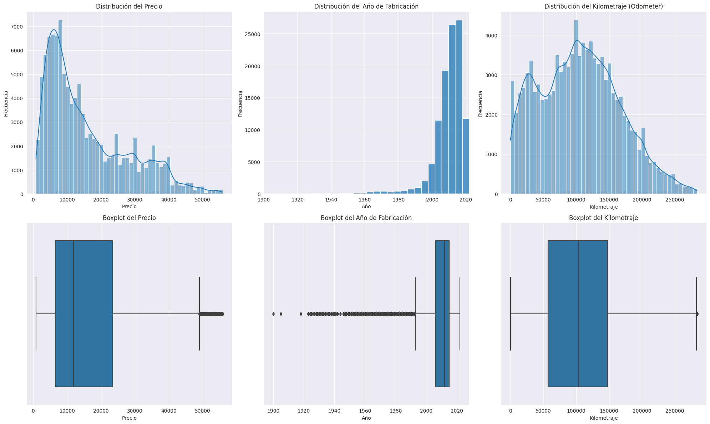
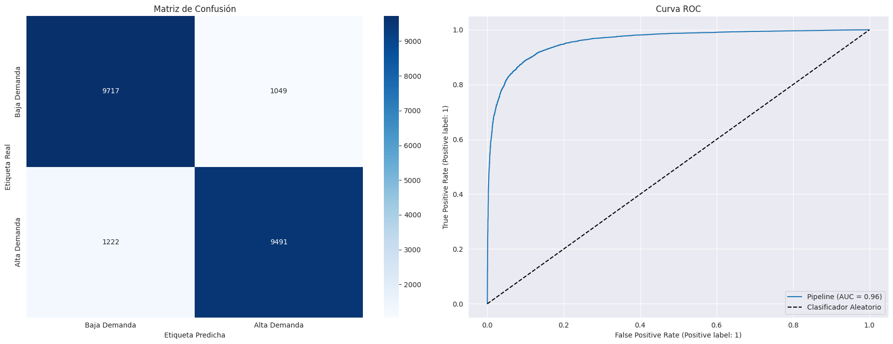

Predicción del precio y clasificación de autos usados.#
Contexto#
Este es un dataset actualizado cada pocos meses que contiene casi toda la información relevante que Craigslist proporciona sobre las ventas de autos, incluyendo columnas como precio, condición, fabricante, latitud/longitud, y otras 18 categorías.
Objetivo#
Diseñar modelos supervisados de regresión y clasificación binaria utilizando técnicas de regresión lineal regularizada (Ridge, Lasso) y regresión logística, integradas en un flujo completo con Pipeline y búsqueda de hiperparámetros mediante GridSearchCV, con el propósito de:
Estimar el precio de un auto usado a partir de sus características (tarea de regresión).
Clasificar si un vehículo está en alta demanda o baja demanda (tarea de clasificación binaria).
Descripción de las variables.#
id: Un identificador único para cada anuncio en el dataset.url: El enlace (URL) al anuncio original en Craigslist.region: La región general de Craigslist donde se publicó el anuncio (e.g.,sf bay area,maine).region_url: El URL de la página principal de la región de Craigslist.price: El precio de venta del vehículo, en dólares estadounidenses ($). Es la variable objetivo principal.year: El año de fabricación del vehículo.manufacturer: El fabricante o marca del vehículo (e.g.,ford,toyota,bmw).model: El modelo específico del vehículo (e.g.,mustang,camry,x5).condition: La condición en la que se encuentra el vehículo (e.g.,excellent,good,fair,salvage).cylinders: El tipo de configuración de cilindros del motor (e.g.,4 cylinders,6 cylinders,v8).fuel: El tipo de combustible que utiliza el vehículo (e.g.,gas,diesel,electric,hybrid).odometer: El kilometraje que ha recorrido el vehículo (en millas).title_status: El estado legal del título del vehículo (e.g.,clean,salvage,rebuilt,lien).transmission: El tipo de transmisión (e.g.,automatic,manual,other).VIN(Vehicle Identification Number): El número de identificación único del vehículo.drive: La tracción del vehículo (e.g.,4wd(tracción en las 4 ruedas),fwd(tracción delantera),rwd(tracción trasera)).size: La categoría de tamaño del vehículo (e.g.,compact,mid-size,full-size,sub-compact).type: El tipo de carrocería del vehículo (e.g.,sedan,SUV,truck,coupe,wagon).paint_color: El color del vehículo.image_url: El enlace (URL) a la imagen principal del anuncio.description: El texto de descripción proporcionado por el vendedor en el anuncio.county: El condado (dentro de la región) (Está vacía), el mismo dataset dice que es un error.state: El estado de EE. UU. (abreviado, e.g.,ca,ny) donde se publicó el anuncio.lat: La latitud de la ubicación del vehículo.long: La longitud de la ubicación del vehículo.posting_date: La fecha en la que el anuncio fue publicado en Craigslist.
EDA#
Imports y cargar los datos.#
import numpy as np
import pandas as pd
import matplotlib.pyplot as plt
import seaborn as sns
from sklearn.model_selection import train_test_split
from sklearn.preprocessing import StandardScaler, OneHotEncoder
import warnings
warnings.filterwarnings("ignore", category=FutureWarning, module="seaborn._oldcore")
# Configuración de visualización
sns.set_style("darkgrid")
plt.rcParams['figure.figsize'] = (12, 8)
pd.set_option('display.max_columns', 30)
df = pd.read_csv('/kaggle/input/craigslist-carstrucks-data/vehicles.csv')
print(f"El dataset tiene {df.shape[0]} filas y {df.shape[1]} columnas.")
El dataset tiene 426880 filas y 26 columnas.
df.columns
Index(['id', 'url', 'region', 'region_url', 'price', 'year', 'manufacturer',
'model', 'condition', 'cylinders', 'fuel', 'odometer', 'title_status',
'transmission', 'VIN', 'drive', 'size', 'type', 'paint_color',
'image_url', 'description', 'county', 'state', 'lat', 'long',
'posting_date'],
dtype='object')
df
/usr/local/lib/python3.11/dist-packages/pandas/io/formats/format.py:1458: RuntimeWarning: invalid value encountered in greater
has_large_values = (abs_vals > 1e6).any()
/usr/local/lib/python3.11/dist-packages/pandas/io/formats/format.py:1459: RuntimeWarning: invalid value encountered in less
has_small_values = ((abs_vals < 10 ** (-self.digits)) & (abs_vals > 0)).any()
/usr/local/lib/python3.11/dist-packages/pandas/io/formats/format.py:1459: RuntimeWarning: invalid value encountered in greater
has_small_values = ((abs_vals < 10 ** (-self.digits)) & (abs_vals > 0)).any()
| id | url | region | region_url | price | year | manufacturer | model | condition | cylinders | fuel | odometer | title_status | transmission | VIN | drive | size | type | paint_color | image_url | description | county | state | lat | long | posting_date | |
|---|---|---|---|---|---|---|---|---|---|---|---|---|---|---|---|---|---|---|---|---|---|---|---|---|---|---|
| 0 | 7222695916 | https://prescott.craigslist.org/cto/d/prescott... | prescott | https://prescott.craigslist.org | 6000 | NaN | NaN | NaN | NaN | NaN | NaN | NaN | NaN | NaN | NaN | NaN | NaN | NaN | NaN | NaN | NaN | NaN | az | NaN | NaN | NaN |
| 1 | 7218891961 | https://fayar.craigslist.org/ctd/d/bentonville... | fayetteville | https://fayar.craigslist.org | 11900 | NaN | NaN | NaN | NaN | NaN | NaN | NaN | NaN | NaN | NaN | NaN | NaN | NaN | NaN | NaN | NaN | NaN | ar | NaN | NaN | NaN |
| 2 | 7221797935 | https://keys.craigslist.org/cto/d/summerland-k... | florida keys | https://keys.craigslist.org | 21000 | NaN | NaN | NaN | NaN | NaN | NaN | NaN | NaN | NaN | NaN | NaN | NaN | NaN | NaN | NaN | NaN | NaN | fl | NaN | NaN | NaN |
| 3 | 7222270760 | https://worcester.craigslist.org/cto/d/west-br... | worcester / central MA | https://worcester.craigslist.org | 1500 | NaN | NaN | NaN | NaN | NaN | NaN | NaN | NaN | NaN | NaN | NaN | NaN | NaN | NaN | NaN | NaN | NaN | ma | NaN | NaN | NaN |
| 4 | 7210384030 | https://greensboro.craigslist.org/cto/d/trinit... | greensboro | https://greensboro.craigslist.org | 4900 | NaN | NaN | NaN | NaN | NaN | NaN | NaN | NaN | NaN | NaN | NaN | NaN | NaN | NaN | NaN | NaN | NaN | nc | NaN | NaN | NaN |
| ... | ... | ... | ... | ... | ... | ... | ... | ... | ... | ... | ... | ... | ... | ... | ... | ... | ... | ... | ... | ... | ... | ... | ... | ... | ... | ... |
| 426875 | 7301591192 | https://wyoming.craigslist.org/ctd/d/atlanta-2... | wyoming | https://wyoming.craigslist.org | 23590 | 2019.0 | nissan | maxima s sedan 4d | good | 6 cylinders | gas | 32226.0 | clean | other | 1N4AA6AV6KC367801 | fwd | NaN | sedan | NaN | https://images.craigslist.org/00o0o_iiraFnHg8q... | Carvana is the safer way to buy a car During t... | NaN | wy | 33.786500 | -84.445400 | 2021-04-04T03:21:31-0600 |
| 426876 | 7301591187 | https://wyoming.craigslist.org/ctd/d/atlanta-2... | wyoming | https://wyoming.craigslist.org | 30590 | 2020.0 | volvo | s60 t5 momentum sedan 4d | good | NaN | gas | 12029.0 | clean | other | 7JR102FKXLG042696 | fwd | NaN | sedan | red | https://images.craigslist.org/00x0x_15sbgnxCIS... | Carvana is the safer way to buy a car During t... | NaN | wy | 33.786500 | -84.445400 | 2021-04-04T03:21:29-0600 |
| 426877 | 7301591147 | https://wyoming.craigslist.org/ctd/d/atlanta-2... | wyoming | https://wyoming.craigslist.org | 34990 | 2020.0 | cadillac | xt4 sport suv 4d | good | NaN | diesel | 4174.0 | clean | other | 1GYFZFR46LF088296 | NaN | NaN | hatchback | white | https://images.craigslist.org/00L0L_farM7bxnxR... | Carvana is the safer way to buy a car During t... | NaN | wy | 33.779214 | -84.411811 | 2021-04-04T03:21:17-0600 |
| 426878 | 7301591140 | https://wyoming.craigslist.org/ctd/d/atlanta-2... | wyoming | https://wyoming.craigslist.org | 28990 | 2018.0 | lexus | es 350 sedan 4d | good | 6 cylinders | gas | 30112.0 | clean | other | 58ABK1GG4JU103853 | fwd | NaN | sedan | silver | https://images.craigslist.org/00z0z_bKnIVGLkDT... | Carvana is the safer way to buy a car During t... | NaN | wy | 33.786500 | -84.445400 | 2021-04-04T03:21:11-0600 |
| 426879 | 7301591129 | https://wyoming.craigslist.org/ctd/d/atlanta-2... | wyoming | https://wyoming.craigslist.org | 30590 | 2019.0 | bmw | 4 series 430i gran coupe | good | NaN | gas | 22716.0 | clean | other | WBA4J1C58KBM14708 | rwd | NaN | coupe | NaN | https://images.craigslist.org/00Y0Y_lEUocjyRxa... | Carvana is the safer way to buy a car During t... | NaN | wy | 33.779214 | -84.411811 | 2021-04-04T03:21:07-0600 |
426880 rows × 26 columns
df.info()
<class 'pandas.core.frame.DataFrame'>
RangeIndex: 426880 entries, 0 to 426879
Data columns (total 26 columns):
# Column Non-Null Count Dtype
--- ------ -------------- -----
0 id 426880 non-null int64
1 url 426880 non-null object
2 region 426880 non-null object
3 region_url 426880 non-null object
4 price 426880 non-null int64
5 year 425675 non-null float64
6 manufacturer 409234 non-null object
7 model 421603 non-null object
8 condition 252776 non-null object
9 cylinders 249202 non-null object
10 fuel 423867 non-null object
11 odometer 422480 non-null float64
12 title_status 418638 non-null object
13 transmission 424324 non-null object
14 VIN 265838 non-null object
15 drive 296313 non-null object
16 size 120519 non-null object
17 type 334022 non-null object
18 paint_color 296677 non-null object
19 image_url 426812 non-null object
20 description 426810 non-null object
21 county 0 non-null float64
22 state 426880 non-null object
23 lat 420331 non-null float64
24 long 420331 non-null float64
25 posting_date 426812 non-null object
dtypes: float64(5), int64(2), object(19)
memory usage: 84.7+ MB
# 1. Eliminar columnas irrelevantes o con demasiada cardinalidad/redundancia
cols_to_drop = [
'id', 'url', 'region_url', 'VIN', 'image_url',
'description', 'county', 'lat', 'long', 'posting_date'
]
df_cleaned = df.drop(columns=cols_to_drop)
print(f"Columnas eliminadas: {cols_to_drop}")
# 2. Manejo de valores faltantes
# Calculamos el porcentaje de valores nulos por columna
missing_percentage = df_cleaned.isnull().sum() / len(df_cleaned) * 100
print("\nPorcentaje de valores faltantes por columna:")
print(missing_percentage.sort_values(ascending=False).head(10))
Columnas eliminadas: ['id', 'url', 'region_url', 'VIN', 'image_url', 'description', 'county', 'lat', 'long', 'posting_date']
Porcentaje de valores faltantes por columna:
size 71.767476
cylinders 41.622470
condition 40.785232
drive 30.586347
paint_color 30.501078
type 21.752717
manufacturer 4.133714
title_status 1.930753
model 1.236179
odometer 1.030735
dtype: float64
# Eliminamos la columna size con más de un 70% de valores faltantes
df_cleaned.drop(columns= ['size'], inplace=True)
print(f"\nDimensiones del dataset: {df_cleaned.shape}")
Dimensiones del dataset: (426880, 15)
# 3. Eliminar filas con valores nulos restantes
# Esto es crucial para la variable objetivo 'price' y otras importantes
df_cleaned.dropna(inplace=True)
print(f"\nDimensiones del dataset tras eliminar filas con nulos: {df_cleaned.shape}")
Dimensiones del dataset tras eliminar filas con nulos: (115988, 15)
# Verificación completa de datos problemáticos
def check_data_issues(df):
print("=== VERIFICACIÓN DE DATOS ===")
print(f"Valores NaN: {df.isna().sum().sum()}")
print(f"Valores infinitos: {df.isin([np.inf, -np.inf]).sum().sum()}")
print(f"Valores nulos totales: {df.isnull().sum().sum()}")
# Verificar columnas numéricas específicas
numeric_cols = ['price', 'year', 'odometer']
for col in numeric_cols:
if col in df.columns:
print(f"\n--- {col} ---")
print(f"NaN: {df[col].isna().sum()}")
print(f"Infinitos: {df[col].isin([np.inf, -np.inf]).sum()}")
print(f"Mínimo: {df[col].min()}")
print(f"Máximo: {df[col].max()}")
# Ejecutar verificación
check_data_issues(df_cleaned)
# Limpiar datos infinitos
df_cleaned = df_cleaned.replace([np.inf, -np.inf], np.nan)
=== VERIFICACIÓN DE DATOS ===
Valores NaN: 0
Valores infinitos: 0
Valores nulos totales: 0
--- price ---
NaN: 0
Infinitos: 0
Mínimo: 0
Máximo: 3736928711
--- year ---
NaN: 0
Infinitos: 0
Mínimo: 1900.0
Máximo: 2022.0
--- odometer ---
NaN: 0
Infinitos: 0
Mínimo: 0.0
Máximo: 10000000.0
# Análisis completo de percentiles y estadísticas
print("=== ANÁLISIS DE PRECIOS ===")
print(f"Count: {df_cleaned['price'].count():,}")
print(f"Mean: ${df_cleaned['price'].mean():,.2f}")
print(f"Median: ${df_cleaned['price'].median():,.2f}")
print(f"Std: ${df_cleaned['price'].std():,.2f}")
print(f"Min: ${df_cleaned['price'].min():,.2f}")
print(f"Max: ${df_cleaned['price'].max():,.2f}")
print("\n=== PERCENTILES ===")
percentiles_detallados = [0.01, 0.05, 0.10, 0.25, 0.50, 0.75, 0.90, 0.95, 0.99]
for p in percentiles_detallados:
valor = df_cleaned['price'].quantile(p)
print(f"P{int(p*100)}: ${valor:,.2f}")
=== ANÁLISIS DE PRECIOS ===
Count: 115,988
Mean: $60,673.74
Median: $10,995.00
Std: $11,465,668.75
Min: $0.00
Max: $3,736,928,711.00
=== PERCENTILES ===
P1: $0.00
P5: $299.00
P10: $2,700.00
P25: $5,739.75
P50: $10,995.00
P75: $22,900.00
P90: $35,000.00
P95: $39,950.00
P99: $55,000.00
# Mostrar las filas con precios más altos (top 20)
df_precios_altos = df_cleaned.sort_values('price', ascending=False).head(20)
print("=== TOP 20 PRECIOS MÁS ALTOS ===")
print(df_precios_altos[['price', 'year', 'odometer', 'model', 'condition']])
# Mostrar las filas con precios más bajos (top 20)
df_precios_altos = df_cleaned.sort_values('price', ascending=True).head(20)
print("=== TOP 20 PRECIOS MÁS BAJOS ===")
print(df_precios_altos[['price', 'year', 'odometer', 'model', 'condition']])
=== TOP 20 PRECIOS MÁS ALTOS ===
price year odometer model condition
318592 3736928711 2007.0 164000.0 tundra excellent
29386 1111111111 1999.0 149000.0 f350 super duty lariat good
230753 135008900 2008.0 110500.0 titan se kingcab like new
137807 123456789 1999.0 96000.0 regal like new
307488 123456789 1996.0 320000.0 sierra 2500 fair
136516 17000000 2007.0 170000.0 2500 good
68935 2000000 2002.0 164290.0 l-series l200 4dr sedan good
155421 1234567 2006.0 123456.0 wrangler like new
219241 1111111 1970.0 42000.0 challenger fair
201823 195000 2017.0 73000.0 wrx like new
104511 169999 2010.0 13000.0 458 italia excellent
113503 165000 2018.0 12.0 srt demon new
323687 155000 2020.0 250.0 benz sprinter new
123206 155000 2020.0 21695.0 g550 excellent
77020 150000 1959.0 64765.0 xk150 se dhc excellent
91502 150000 2009.0 182415.0 escape good
63153 150000 1959.0 64765.0 xk 150 se dhc excellent
363978 150000 1959.0 64765.0 xk150 se dhc excellent
277325 150000 1969.0 60000.0 911 s excellent
41657 150000 1959.0 64765.0 xk 150 excellent
=== TOP 20 PRECIOS MÁS BAJOS ===
price year odometer model condition
99860 0 1999.0 109000.0 corolla excellent
186784 0 2018.0 75344.0 accord ex 1.5l turbo excellent
186783 0 2017.0 110.0 civic ex 2.0l sedan new
186782 0 2011.0 200.0 f250 4x4 supercab plow new
186781 0 2015.0 40.0 accord exl 2.4l 4-door like new
186779 0 2017.0 30.0 accord 2.4l sport excellent
186778 0 2014.0 120.0 cherokee limited 4x4 new
186777 0 2014.0 150.0 grand cherokee limited 4x4 new
186776 0 2014.0 77.0 grand cherokke limited/nav new
186775 0 2008.0 110.0 lr2/hse/nav new
186774 0 2013.0 80.0 gs350 luxury sedan awd excellent
186771 0 2015.0 60.0 es 350 luxury package new
186769 0 2013.0 105.0 hse luxury ed. like new
186768 0 2008.0 130.0 ml550 4-matic/nav excellent
186766 0 2014.0 160000.0 silverado 1500 lt z71 excellent
186765 0 2014.0 110.0 malibu lt sedan like new
186785 0 2018.0 40.0 civic si 1.5lturbo.... new
186786 0 2018.0 35.0 crv-lx awd excellent
186787 0 2018.0 33000.0 accord hybrid exl nav excellent
186788 0 2014.0 105.0 acadia slt1/nav+tech 4x4 like new
# Filtrar para mantener solo precios menores a 1,111,111
df_cleaned = df_cleaned[df_cleaned['price'] < 1111111]
# Filtrar para mantener solo precios mayores a 14
df_cleaned = df_cleaned[df_cleaned['price'] > 14]
# 4. Manejo de outliers en 'price' y 'odometer'
# Precios de 0 o extremadamente altos no son realistas
# Odometer con valores extremos también pueden ser errores
p_low = df_cleaned['price'].quantile(0.01)
p_high = df_cleaned['price'].quantile(0.99)
o_high = df_cleaned['odometer'].quantile(0.99)
df_cleaned = df_cleaned[
(df_cleaned['price'] > p_low) &
(df_cleaned['price'] < p_high) &
(df_cleaned['odometer'] < o_high)
]
print(f"Dimensiones del dataset tras filtrar outliers: {df_cleaned.shape}")
Dimensiones del dataset tras filtrar outliers: (107391, 15)
# Código de EDA inspirado en el PDF (páginas 14-21)
fig, axes = plt.subplots(2, 3, figsize=(20, 12)) # Cambiado a 2 filas para incluir boxplots
# Histograma para 'price'
sns.histplot(df_cleaned['price'], bins=50, kde=True, ax=axes[0, 0])
axes[0, 0].set_title('Distribución del Precio')
axes[0, 0].set_xlabel('Precio')
axes[0, 0].set_ylabel('Frecuencia')
# Boxplot para 'price'
sns.boxplot(x=df_cleaned['price'], ax=axes[1, 0])
axes[1, 0].set_title('Boxplot del Precio')
axes[1, 0].set_xlabel('Precio')
# Histograma para 'year'
sns.histplot(df_cleaned['year'], bins=30, kde=False, ax=axes[0, 1])
axes[0, 1].set_title('Distribución del Año de Fabricación')
axes[0, 1].set_xlabel('Año')
axes[0, 1].set_ylabel('Frecuencia')
axes[0, 1].set_xlim(df_cleaned['year'].min(), df_cleaned['year'].max())
# Boxplot para 'year'
sns.boxplot(x=df_cleaned['year'], ax=axes[1, 1])
axes[1, 1].set_title('Boxplot del Año de Fabricación')
axes[1, 1].set_xlabel('Año')
# Histograma para 'odometer'
sns.histplot(df_cleaned['odometer'], bins=50, kde=True, ax=axes[0, 2])
axes[0, 2].set_title('Distribución del Kilometraje (Odometer)')
axes[0, 2].set_xlabel('Kilometraje')
axes[0, 2].set_ylabel('Frecuencia')
# Boxplot para 'odometer'
sns.boxplot(x=df_cleaned['odometer'], ax=axes[1, 2])
axes[1, 2].set_title('Boxplot del Kilometraje')
axes[1, 2].set_xlabel('Kilometraje')
plt.tight_layout()
plt.show()

Ingeniería de características (HighDemand)#
# Tarea 1.5: Generar la variable binaria HighDemand
median_price = df_cleaned['price'].median()
df_cleaned['HighDemand'] = (df_cleaned['price'] > median_price).astype(int)
print(f"Variable 'HighDemand' creada. Mediana del precio: ${median_price:,.2f}")
print("\nDistribución de la nueva variable:")
print(df_cleaned['HighDemand'].value_counts(normalize=True))
Variable 'HighDemand' creada. Mediana del precio: $11,900.00
Distribución de la nueva variable:
HighDemand
0 0.500694
1 0.499306
Name: proportion, dtype: float64
Construcción de Pipelines#
# Importaciones de Scikit-learn para modelado
from sklearn.model_selection import train_test_split, GridSearchCV
from sklearn.pipeline import Pipeline
from sklearn.preprocessing import StandardScaler, OneHotEncoder
from sklearn.compose import ColumnTransformer
# Modelos a utilizar
from sklearn.linear_model import Ridge, Lasso, LogisticRegression
# Métricas de evaluación
from sklearn.metrics import mean_squared_error, r2_score, mean_absolute_error
from sklearn.metrics import classification_report, confusion_matrix, roc_auc_score, RocCurveDisplay
print("Librerías de scikit-learn importadas.")
Librerías de scikit-learn importadas.
# Separar características (X) y objetivos (y)
X = df_cleaned.drop(columns=['price', 'HighDemand'])
y_reg = df_cleaned['price'] # Objetivo para regresión
y_clas = df_cleaned['HighDemand'] # Objetivo para clasificación
# Identificar columnas numéricas y categóricas
numerical_features = X.select_dtypes(include=np.number).columns.tolist()
categorical_features = X.select_dtypes(exclude=np.number).columns.tolist()
print(f"Características numéricas ({len(numerical_features)}): {numerical_features}")
print(f"Características categóricas ({len(categorical_features)}): {categorical_features}")
# Dividir los datos en conjuntos de entrenamiento y prueba
# Usaremos una división para ambas tareas para mantener la consistencia
X_train, X_test, y_reg_train, y_reg_test, y_clas_train, y_clas_test = train_test_split(
X, y_reg, y_clas, test_size=0.2, random_state=3
)
print(f"\nDatos divididos: {len(X_train)} para entrenamiento, {len(X_test)} para prueba.")
Características numéricas (2): ['year', 'odometer']
Características categóricas (12): ['region', 'manufacturer', 'model', 'condition', 'cylinders', 'fuel', 'title_status', 'transmission', 'drive', 'type', 'paint_color', 'state']
Datos divididos: 85912 para entrenamiento, 21479 para prueba.
# Crear el pipeline de preprocesamiento
# Código inspirado en el concepto de Pipeline del PDF
preprocessor = ColumnTransformer(
transformers=[
('num', StandardScaler(), numerical_features),
('cat', OneHotEncoder(handle_unknown='ignore'), categorical_features)
],
remainder='passthrough' # Mantiene columnas no especificadas (si las hubiera)
)
print("Preprocesador creado con StandardScaler para numéricas y OneHotEncoder para categóricas.")
Preprocesador creado con StandardScaler para numéricas y OneHotEncoder para categóricas.
# --- Modelo de Regresión Logística ---
# 1. Crear el Pipeline
logreg_pipeline = Pipeline(steps=[
('preprocessor', preprocessor),
('model', LogisticRegression(max_iter=1000, solver='liblinear'))
])
# 2. Definir el grid de hiperparámetros
param_grid_logreg = {
'model__C': [0.01, 0.1, 1.0, 10.0, 100.0]
}
# 3. Configurar y ejecutar GridSearchCV
# Usamos AUC como métrica de scoring, es más robusta que accuracy
grid_search_logreg = GridSearchCV(logreg_pipeline, param_grid_logreg, cv=5,
scoring='roc_auc', n_jobs=-1)
print("Entrenando modelo de Regresión Logística con GridSearchCV...")
grid_search_logreg.fit(X_train, y_clas_train)
print(f"Mejor C para Regresión Logística: {grid_search_logreg.best_params_}")
best_logreg = grid_search_logreg.best_estimator_
Entrenando modelo de Regresión Logística con GridSearchCV...
Mejor C para Regresión Logística: {'model__C': 10.0}
# Predicciones y probabilidades
y_pred_logreg = best_logreg.predict(X_test)
y_proba_logreg = best_logreg.predict_proba(X_test)[:, 1] # Probabilidad de la clase 1 (HighDemand)
# Reporte de Clasificación
print("--- Resultados de Evaluación (Clasificación) ---")
print("\nReporte de Clasificación:")
print(classification_report(y_clas_test, y_pred_logreg, target_names=['Baja Demanda (0)', 'Alta Demanda (1)']))
# AUC Score
auc = roc_auc_score(y_clas_test, y_proba_logreg)
print(f"Área Bajo la Curva ROC (AUC): {auc:.4f}")
# Gráficos: Matriz de Confusión y Curva ROC
fig, axes = plt.subplots(1, 2, figsize=(18, 7))
# Matriz de Confusión
cm = confusion_matrix(y_clas_test, y_pred_logreg)
sns.heatmap(cm, annot=True, fmt='d', cmap='Blues', ax=axes[0],
xticklabels=['Baja Demanda', 'Alta Demanda'],
yticklabels=['Baja Demanda', 'Alta Demanda'])
axes[0].set_title('Matriz de Confusión')
axes[0].set_ylabel('Etiqueta Real')
axes[0].set_xlabel('Etiqueta Predicha')
# Curva ROC
RocCurveDisplay.from_estimator(best_logreg, X_test, y_clas_test, ax=axes[1])
axes[1].set_title('Curva ROC')
axes[1].plot([0, 1], [0, 1], 'k--', label='Clasificador Aleatorio')
axes[1].legend()
plt.tight_layout()
plt.show()
--- Resultados de Evaluación (Clasificación) ---
Reporte de Clasificación:
precision recall f1-score support
Baja Demanda (0) 0.89 0.90 0.90 10766
Alta Demanda (1) 0.90 0.89 0.89 10713
accuracy 0.89 21479
macro avg 0.89 0.89 0.89 21479
weighted avg 0.89 0.89 0.89 21479
Área Bajo la Curva ROC (AUC): 0.9590
